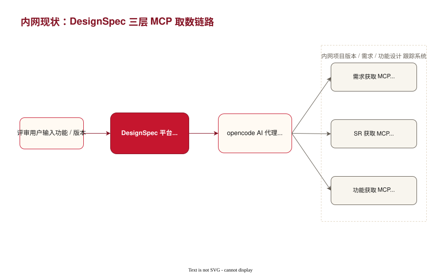
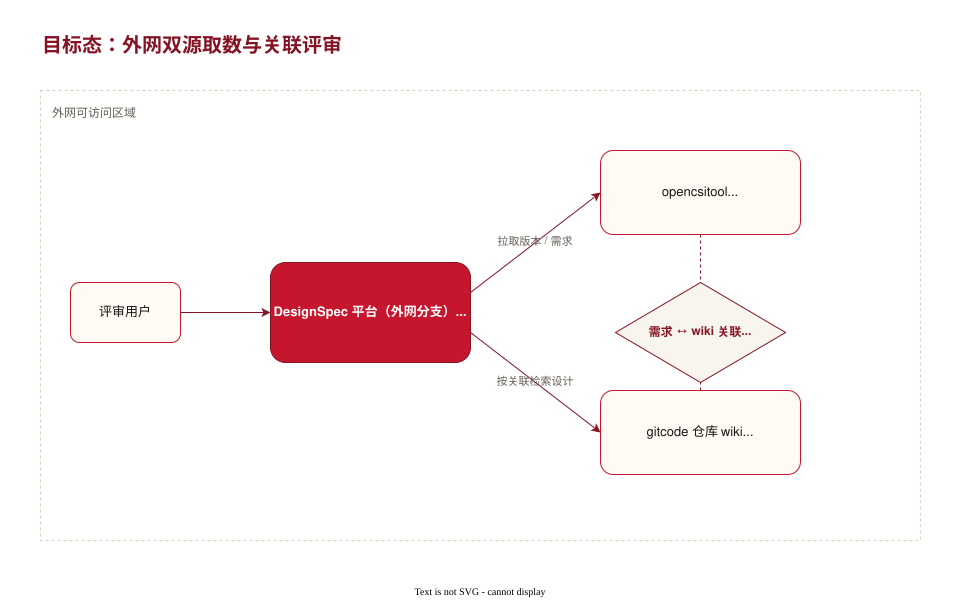

- 定位：输入功能 / 版本，由 opencode AI 代理打分，输出结构化评审结果与建议。
- 取数：平台不直连业务系统，全部经 opencode 调用三层 MCP（需求→SR→功能）。
- 能力：评审打分（功能定义 40 + 设计说明书 60）、收口跟踪、版本同步、质量看板。
- 边界：当前仅「评审 + 收口」，辅助生成尚未实现。


| 维度 | 内网现状 | 外网目标 |
|---|---|---|
| 运行环境 | 内网 | 外网可访问区域 |
| 版本与需求来源 | 需求 MCP / SR MCP | opencsitool（版本信息 + 需求列表） |
| 功能设计来源 | 功能获取 MCP | gitcode wiki（模板 + 规范承载内容） |
| 需求与设计关联 | 系统内建链路 | wiki 内显式标记 opencsitool 需求 |
| 取数方式 | opencode 调三层 MCP | 平台数据接入层调 API + wiki 双源 |
| 评审与生成 | 评审 + 收口 | 评审 + 收口 + （规划）辅助生成 |

| GAP 域 | 缺口描述 | 影响 |
|---|---|---|
| 数据接入 | 现无 opencsitool API 客户端与 gitcode wiki 取数能力 | 需新建外网数据接入层替换 MCP 链路 |
| 设计归档 | opencsitool 无设计归档，依赖 wiki 模板规范化 | 模板未落地则结构不一，影响打分维度提取 |
| 关联一致性 | 需求 ↔ wiki 关联靠人工标记，缺强约束 | 漏标 / 错标导致取数缺失或张冠李戴 |
| 评审闭环 | 收口依赖可重复取数与稳定标识 | wiki 改名 / 迁移破坏标识，影响收口跟踪 |
| 安全合规 | 外网访问权限、数据脱敏与凭据管理 | 内外网数据边界与权限模型需重新界定 |
| 辅助生成 | 平台尚未实现辅助生成 | 属增量能力，需单列里程碑 |
打通版本与需求列表取数，跑通评审任务入口与组织维度。
下发模板与规范，实现按需求关联检索设计内容。
建立关联强约束与一致性校验，恢复评审 + 收口全流程。
评审闭环稳定后，增量实现设计草稿辅助生成。